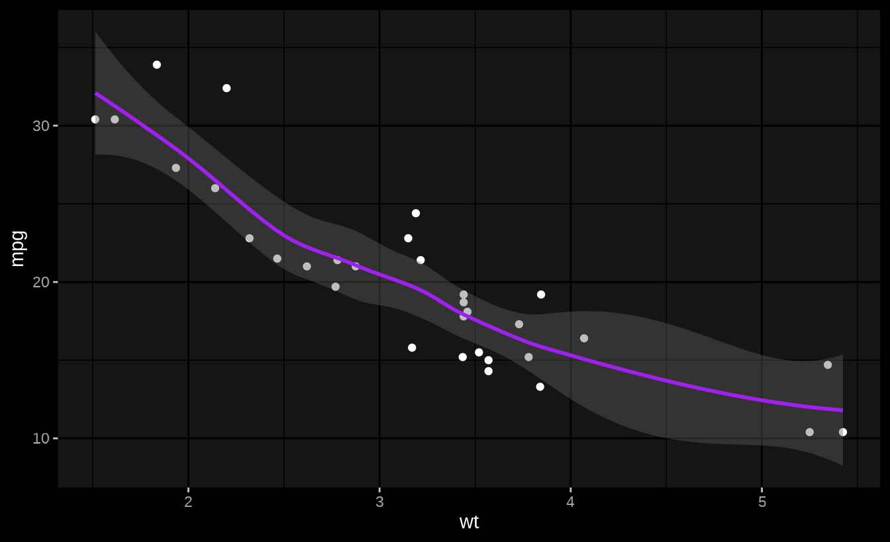

As we’ve learned in previous articles, thematic_on() works by modifying global state (i.e., it changes global par(), palette(), ggplot2::theme_set(), and various other settings). This makes it simple to start using thematic everywhere, but it comes at the cost of possibly introducing unwanted side-effects in other R code. thematic_shiny() and thematic_rmd() essentially solve this problem by automatically cleaning up after themselves in an Shiny and R Markdown context, but more generally, you might want lower-level tools for scoping thematic themes to a particular context.
One-time use
The recommended way to apply a thematic theme to a single plot is to use thematic_with_theme(). This requires a thematic_theme() object, which has the same arguments as thematic_on(), but just creates a theme object without activating it.
library(ggplot2)
theme_purple <- thematic_theme("black", "white", accent = "purple")
ggsmooth <- ggplot(mtcars, aes(wt, mpg)) + geom_point() + geom_smooth()
ggsmooth
thematic_with_theme(theme_purple, ggsmooth)
thematic_with_theme() is particularly useful for use inside a shiny app where you might want to only apply thematic to specific plots and/or use different themes for different plots:
library(shiny)
library(thematic)
purple <- thematic_theme(accent = "purple")
orange <- thematic_theme(accent = "orange")
ui <- fluidPage(
theme = shinythemes::shinytheme("darkly"),
plotOutput("purple"),
plotOutput("orange")
)
server <- function(input, output, session) {
output$purple <- renderPlot({
thematic_with_theme(purple, {
ggplot(faithfuld, aes(waiting, eruptions)) +
geom_raster(aes(fill = density))
})
})
output$orange <- renderPlot({
thematic_with_theme(orange, {
ggplot(faithfuld, aes(waiting, eruptions)) +
geom_raster(aes(fill = density))
})
})
}
shinyApp(ui, server)
If you find it annoying to supply both the thematic_theme() and the plot expr to the same function call, you can also use thematic_local_theme(), which cleans up after itself when R exits the current execution environment. The one catch is that, in this case, you currently have to print() ggplot2 and lattice objects. By the way, if your interesting in learning more about how thematic_local_theme() actually works, and where else it might be useful (unit tests!), check out this blog post by Jenny Bryan.
p <- ggplot(faithfuld, aes(waiting, eruptions)) +
geom_raster(aes(fill = density))
server <- function(input, output, session) {
output$purple <- renderPlot({
thematic_local_theme(purple)
print(p)
})
output$orange <- renderPlot({
thematic_local_theme(orange)
print(p)
})
}
shinyApp(ui, server)Several-time use
To apply thematic to several plots at a time, consider using thematic_on() to modify state and thematic_set_theme() to restore state. Since thematic_on() returns a theme object that represents the previously set theme (and, if none, returns NULL), we can use a pattern like this to set a theme for two plots, then restore the previous theme:
old_theme <- thematic_on("black", "white", accent = NA)
plot(1:10)
qplot(1:10)
# equivalent of thematic_off() if old_theme is NULL
thematic_set_theme(old_theme)
plot(1:10)When writing your own functions, this pattern useful in conjunction with on.exit() to temporarily apply a theme in such a way that, even if the function errors out, the previous state is still restored.
my_plot_function <- function(...) {
old_theme <- thematic_on("black", "white")
on.exit(thematic_set_theme(old_theme), add = TRUE)
# do stuff with ...
}